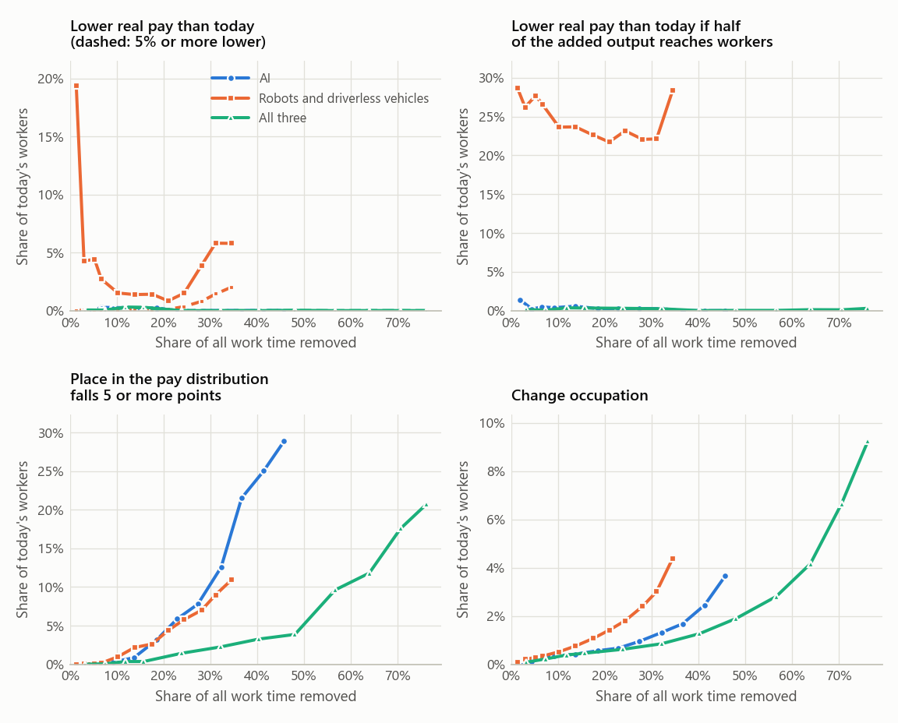

I built an open-source simulation of what AI and robots would do to each U.S. worker’s pay. So far, when AI’s added output reaches workers, almost no one ends with lower real pay, but many fall in relative standing. Anomie, a state in which the rules tying effort to reward stop holding, can arise even when incomes rise. The model cannot yet measure standing, expectations or the path through work. I am asking for help improving its modules, adding new ones and testing them against outcomes.
The model follows a synthetic U.S. workforce from automation to a new labor-market equilibrium
The simulation starts from a synthetic workforce of 591,529 records, each a worker at one point in a career, weighted to U.S. employment by occupation. Each record carries schooling, experience and a skill profile, and can enter only the occupations whose O*NET requirements, related experience and licenses it holds. Automation indexes say which task time leaves each of 551 occupations: Eloundou and coauthors’ ratings of what language models can do, Anthropic’s observed use of Claude at work, and ratings by Claude of which physical tasks robots and driverless vehicles could do by 2031, 2036 and 2046. Demand for each occupation’s work comes from two elasticities, one among occupations within 205 industry groups and one across industries. Workers take the best-paid occupation open to them, retirements and new entrants re-sort the workforce over time, and the model solves for the wages at which supply equals demand in every occupation.
Exposure predicts relative loss, not absolute loss, while the added output reaches workers
The table raises automation in steps until every task an index marks as feasible is done by machine, and applies each step to today’s workforce before anyone retires or joins. Nearly every worker gains in real terms; many lose ground to others.
| AI | Robots and driverless vehicles | All three | |
|---|---|---|---|
| Share of all work time removed | 45.8% | 34.5% | 76.3% |
| Output | +149% | +42% | +377% |
| Lower real pay, highest share at any step | 0.29% | 19.3% | 0.31% |
| Lower real pay at the top | 0% | 5.8% | 0% |
| Real pay 5% or more lower at the top | 0% | 2.0% | 0% |
| Place in the pay distribution falls 5 or more points | 28.9% | 10.9% | 20.8% |
| 90/10 pay ratio (3.97 today) | 2.93 | 5.66 | 3.90 |
| College pay premium (66.5% today) | 48.0% | 89.3% | 75.3% |
| Changed occupation | 3.65% | 4.37% | 9.24% |
| Lower real pay if 15% of the added output reaches workers | 9.2% | 45.6% | 1.2% |
Year 0: today’s workforce, before retirements and new entrants. AI removes the tasks in Eloundou et al.’s exposure ratings; robots and driverless vehicles remove the tasks Claude rates feasible by 2046; all three applies AI first and robots to the tasks left. All added output is paid to workers except in the last row, where workers receive 15% of it, the share implied by the substantial scenario of Korinek et al. (2026). Sources: Exposure Is Not Loss, Tables 7 and 8; the last row from exit_floors_pe.py in the repository.


Read as a forecast of loss, an exposure score would have the most exposed workers losing pay. In the simulation, with AI at full exposure, the pay of the most exposed quarter of workers rises 112% while falling 15% against the average.
Absolute losses need little of the gain to reach workers, a narrow shock, or few occupations to move to
When all added output is paid to workers, a worker’s real pay falls only if their pay falls behind the average by more than the average rises. Three conditions produce absolute losses in the model. First, little of the gain reaches workers: owners keep it, or the machines cost nearly as much as the labor they replace, which Acemoglu and Restrepo (2019) call so-so automation. In either case prices fall little while the work still leaves the job. Second, the shock is narrow: robots alone hit a few low-wage occupations hard and raise output by 42%, against 149% for AI. At the top of the robot ladder, 2.0% of workers lose 5% or more of their real pay; 85% of them have no college degree, most are groundskeepers, packaging machine operators or forklift operators, and they can enter 2.0 other occupations on average, against 12.0 for all workers. Third, automation removes every task that carries a job’s requirement, the requirement drops, and entrants flood in: industrial truck operators lose 36%.
If workers left the labor force once their real pay fell 5% or more, 2.0% would leave at the top of the robot ladder and none under AI. With 15% of the gain reaching workers and a 10% threshold, 31% would leave under robots alone. These counts are first order: they do not let the departures raise the pay of those who stay.
Rising pay with falling standing is a reason for concern
Standing and expectations can matter apart from income. Anomie is a state in which the shared rules linking effort to reward stop holding. Durkheim (1897) found suicide rising in sudden prosperity and in financial crises, when people no longer knew which claims were legitimate. Merton (1938) traced deviance to a gap between cultural goals and the legitimate means of reaching them. Manufacturing job losses have been linked to less marriage and more premature mortality among young men (Autor, Dorn and Hanson 2019) and to more opioid overdose deaths (Venkataramani et al. 2020), and lower subjective social status to support for right populist parties (Gidron and Hall 2017).
The model measures pay and occupation but not yet social standing, broken expectations, or whether a worker keeps a known path from training into an occupation and upward. I am asking for help improving its modules; adding modules for labor force participation, capital ownership and job formation; and testing it against employment, mortality, marriage and self-reported status.
Working papers
- Exposure Is Not Loss: A Worker-Level Simulation of AI and Robot Automation (November 2026, 23 pages). Patterns of automation and their outcomes: AI exposure predicts which workers fall behind others, not who loses real pay, while robots without AI lower real pay for 0.9% to 19% of workers, mostly those without a college degree. Section 2 sets out the synthetic workforce and the elasticities.
- Task Clusters in O*NET, 2005–2024: What Grew, What Shrank, and Where AI Exposure Points (October 2026, 9 pages). Patterns of task change across two decades of O*NET task statements, and where the exposure labels point.
- Elasticities. Working paper in preparation. The estimates in use, 0.8 among occupations within industries and 0.66 across industries from the BEA–BLS production account for 1997–2014, are in Section 2 of Exposure Is Not Loss and, with the stylized facts they must match, in ELASTICITY.md.
- The synthetic workforce and skill dispersion. Working paper in preparation. The current build, its rules for who can enter which occupation and its known weak points are in Section 2 of Exposure Is Not Loss and in the repository’s MODULES.md.
The code is open to forks and pull requests
The repository at github.com/ericsilver/fow holds the synthetic workforce generator, the automation shocks, the demand system, occupational choice and the equilibrium solver, turnover, and the measures behind every number on this page. A new module starts as an issue that states what it changes, where it plugs in and which outcome metric would show that it helps; it arrives as a pull request that reports those metrics before and after. CONTRIBUTING.md gives the interfaces and the tests a change must pass.
The elasticities decide who falls behind, and their estimates are the weakest part of the model
Automation lowers the price of an occupation’s work; the elasticities decide how much of that gain its workers keep. At early adoption the occupation at the 75th percentile of exposure ends with pay 7.6% below the occupation at the 25th when the across-industry elasticity is 0.66, the estimate for 1997–2014, and 0.5% below it at 1.6, the same method’s estimate for 2015–2024. Leaving computers out of the 1997–2014 data moves the estimate to 1.52, about three standard errors. Against fifteen stylized facts the model reproduces five, partly reproduces three, fails five and has not been tested on two. The five it fails:
| Fact | What the model does |
|---|---|
| Rising income, not only falling prices, drives spending toward services (Comin, Lashkari and Mestieri 2021) | Demand responds only to prices. |
| Employment in an automating industry rises before it falls: cotton textiles, steel, autos (Bessen 2019) | Constant elasticities below one cannot produce the rise. |
| Within a decade, employment in exposed occupations falls more than their pay (Kogan et al. 2023) | In year 0 nearly all of the adjustment falls on pay. |
| Displaced workers earn less for years (Jacobson, LaLonde and Sullivan 1993; Davis and von Wachter 2011) | A worker who changes occupation earns its wage at once. |
| Labor receives part of output, and its share has fallen (Karabarbounis and Neiman 2014) | Labor receives all output. |
ELASTICITY.md lists the fifteen facts and seven open problems, each with a test of progress: an across-industry elasticity that holds in both periods; income effects, added only if a 2005–2024 backcast needs them; an elasticity that falls as a market matures, without a cap on market size; a switching cost estimated from occupational transitions in place of the fixed 5.5% preference for one’s own occupation; occupation-level demand that passes a split-half test; a price for AI and robot services; and a backcast of a past technology.
Modules the model needs but does not contain
Each of these would change a reported result. MODULES_PROPOSED.md gives for each the interface, the literature to start from, the simplest version worth building and the metrics that would show it helps.
- Capital ownership. The model pays all added output to workers, so every real pay gain it reports is an upper bound.
- Job formation and new work. Tasks are removed and never added, so the most exposed occupations can only fall relative to others.
- Labor force participation. Every worker stays at work whatever the pay.
- Public demand. Police, teachers and other public occupations are priced like consumer goods, so their pay and headcount follow productivity instead of budgets.
- Geography. One national market per occupation, so local concentrations of exposure cannot produce local losses.
- Also welcome: demand that shifts with income, skill formation and retraining, and earnings lost at displacement.
Nineteen outcome metrics let each change to the model be tested against public data
Each metric was chosen because model variants predict different values for it. Eight can be tested now, by backcast or against data from 2022 on; eleven need a forecast committed to the repository, with its date, scenario and model version, before the data arrive. Observed series move for every reason at once, so each score is a contrast: across occupations, or against a trend registered with the forecast. OUTCOME_METRICS.md gives the definitions, current model values and scoring rules.
| Metric | Public series | Tested |
|---|---|---|
| M01 Employment change by occupation against exposure | BLS Occupational Employment and Wage Statistics | Now |
| M02 Wage change by occupation against exposure | Same | Now |
| M03 Employment response relative to wage response | From M01 and M02 | Now |
| M04 Industry output and prices against productivity | BEA GDP by industry; BEA–BLS production account | Now |
| M05 Service occupations’ share of employment | Occupational Employment and Wage Statistics by major group | Now and forecast |
| M06 Workers leaving exposed occupations | Current Population Survey; BLS occupational separations | Now |
| M07 Young workers entering exposed occupations | Current Population Survey microdata | Now |
| M08 Job loss and earnings after displacement | CPS Displaced Worker Supplement | Now |
| M09 Work time saved by generative AI | Real-Time Population Survey (FRED RPSGENAITSALL) | Forecast |
| M10 Which occupations use AI | Anthropic Economic Index | Forecast |
| M11 Robot adoption | IFR World Robotics; Census robotics spending | Forecast |
| M12 Continuing workers with lower real pay | PSID, SIPP, matched CPS | Forecast |
| M13 Workers falling 5 or more points in the pay distribution | PSID, SIPP; occupational wage ranks | Forecast |
| M14 90/10 pay ratio | CPS usual weekly earnings deciles | Forecast |
| M15 College pay premium | CPS usual weekly earnings by education | Forecast |
| M16 Participation by education and age | CPS labor force participation series | Forecast |
| M17 Labor share of output | BLS labor share; BEA compensation share of income | Forecast |
| M18 Output per hour | BLS nonfarm business output per hour | Forecast |
| M19 Public employment and pay | BLS government employment; Census public employment survey | Forecast |
The scenario tools show the same model by scenario, occupation and worker
The summary of results runs the model under the Anthropic Institute’s economic scenarios. The scenarios page shows the effects of each scenario for the economy, one occupation or one type of worker, and the workforce explorer shows the synthetic workforce itself.
Acknowledgments. This simulation continues work I began at Carnegie Mellon with Seth Goldstein and Mark Kamlet. Mark’s contribution was invaluable in arriving at a utility function that lets jobs be introduced and removed over time. Seth’s insight into, and familiarity with, O*NET’s rated requirements made those ratings interpretable and added structure to the simulated job market. Neither has reviewed these pages; the results and any errors are mine.
AI edited ideated supported: the synthetic workforce generator and the model are my own work, built with heavy use of AI. Anthropic’s Claude wrote and ran the code to my direction, rated which physical tasks robots and driverless vehicles could do, drafted and revised the prose, contributed framings in dialogue, and built the page. What each of those words means is at aporia.institute/ai.
Sources
- Acemoglu, Daron, and Pascual Restrepo. 2019. “Automation and New Tasks: How Technology Displaces and Reinstates Labor.” Journal of Economic Perspectives 33 (2): 3–30. doi:10.1257/jep.33.2.3
- Anthropic. 2026. Anthropic Economic Index data: observed exposure and robot exposure. huggingface.co/datasets/Anthropic/EconomicIndex
- Autor, David, David Dorn, and Gordon Hanson. 2019. “When Work Disappears: Manufacturing Decline and the Falling Marriage Market Value of Young Men.” American Economic Review: Insights 1 (2): 161–178. doi:10.1257/aeri.20180010
- Bessen, James. 2019. “Automation and Jobs: When Technology Boosts Employment.” Economic Policy 34 (100): 589–626. doi:10.1093/epolic/eiaa001
- Comin, Diego, Danial Lashkari, and Martí Mestieri. 2021. “Structural Change With Long-Run Income and Price Effects.” Econometrica 89 (1): 311–374. doi:10.3982/ECTA16317
- Davis, Steven J., and Till von Wachter. 2011. “Recessions and the Costs of Job Loss.” Brookings Papers on Economic Activity 2011 (2): 1–72. doi:10.1353/eca.2011.0016
- Durkheim, Émile. 1897. Le suicide: étude de sociologie. Paris: Félix Alcan. Book II, chapter 5.
- Eloundou, Tyna, Sam Manning, Pamela Mishkin, and Daniel Rock. 2024. “GPTs Are GPTs: Labor Market Impact Potential of LLMs.” Science 384 (6702): 1306–1308. doi:10.1126/science.adj0998
- Gidron, Noam, and Peter A. Hall. 2017. “The Politics of Social Status: Economic and Cultural Roots of the Populist Right.” British Journal of Sociology 68 (S1): S57–S84. doi:10.1111/1468-4446.12319
- Jacobson, Louis S., Robert J. LaLonde, and Daniel G. Sullivan. 1993. “Earnings Losses of Displaced Workers.” American Economic Review 83 (4): 685–709.
- Karabarbounis, Loukas, and Brent Neiman. 2014. “The Global Decline of the Labor Share.” Quarterly Journal of Economics 129 (1): 61–103. doi:10.1093/qje/qjt032
- Kogan, Leonid, Dimitris Papanikolaou, Lawrence D. W. Schmidt, and Bryan Seegmiller. 2023. “Technology and Labor Displacement: Evidence from Linking Patents with Worker-Level Data.” NBER Working Paper 31846. doi:10.3386/w31846
- Korinek, Anton, Charles I. Jones, Szymon Sacher, Tess Cotter, and Peter McCrory. 2026. “Economic Scenarios for Transformative AI.” The Anthropic Institute Working Paper 2026-02.
- Merton, Robert K. 1938. “Social Structure and Anomie.” American Sociological Review 3 (5): 672–682. doi:10.2307/2084686
- Venkataramani, Atheendar S., Elizabeth F. Bair, Rourke L. O’Brien, and Alexander C. Tsai. 2020. “Association Between Automotive Assembly Plant Closures and Opioid Overdose Mortality in the United States.” JAMA Internal Medicine 180 (2): 254–262. doi:10.1001/jamainternmed.2019.5686